静态链接过程分析
@toc
本文测试环境为 ubuntu20.04 + gcc version 9.4.0 (Ubuntu 9.4.0-1ubuntu1~20.04.2)
一、开始
首先，编写两个简单的文件用于待会儿的分析：
1 | // swap.c |
代码很简单，在 swap.c 中定义了一个全局变量和函数，然后在 main.c 中使用了这个全局变量和函数。
然后我们来分析一下编译、链接这两个过程。
二、目标文件分析
1、sub.o 文件分析
接下来首先把这两个文件编译成目标文件(.o)：
1 | gcc -m32 -c main.c |
在 Linux 系统中，目标文件(
.o) 和可执行文件都是 ELF 格式的，ELF 文件可以参考 ELF 文件格式
首先来分析 sub.o 文件：
1 | readelf -S swap.o |
利用
readelf工具可以很方便地分析 ELF 格式的文件
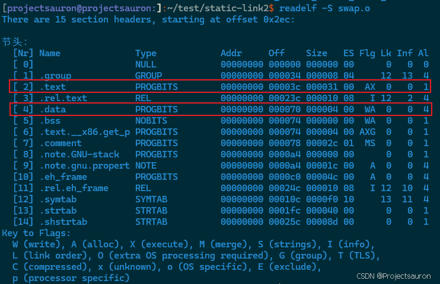
我们主要关注代码段（.text）和数据段（.data），因为 shared 在数据段，swap 在代码段，不知道的可以参考 单片机内存区域划分。
注意看，它们的 Addr 字段都是 0，因为这是目标文件，不是可执行文件，所以不会安排地址。然后看：
.text在sub.o文件中的偏移量（off）是0x3c，大小（size）是 $0x31$.data在sub.o文件中的偏移量（off）是0x70，大小（size）是 $0x04$
仔细看这里的数据，后面会用到。还要注意，这里的数据是十六进制的。
然后看一下 ELF 的 header：
1 | readelf -h swap.o |
ELF Header 是 ELF 文件的开头部分，它包含了描述整个文件的信息。ELF 头的结构如下：
1 | typedef struct { |
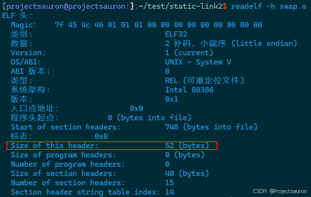
ELF header 的大小是 52 字节，也就是 0x34。所以 sub.o 的内存映像如下：
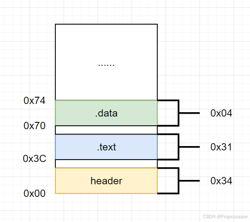
然后来看符号表：
1 | readelf -s swap.o |
符号表是 ELF 文件中的一个节（section），用于存储程序中定义和引用的符号信息。符号表记录了函数、变量以及其他可执行代码中使用的符号的名称、类型和地址等信息。
ELF符号表的结构如下：
1 | typedef struct { |
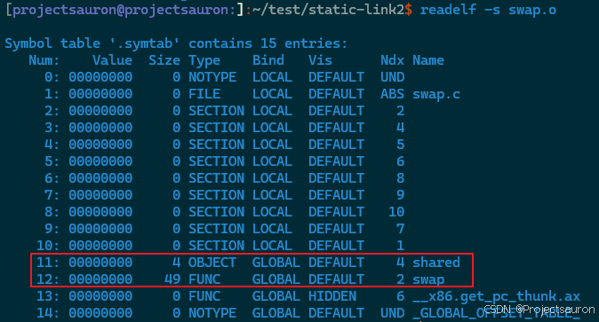
首先看 shared：
Size = 4，大小为 4 字节Type = OBJECT，表示这是一个数据对象Bind = GLOBAL，表示这是全局的，也就是在其他文件中可以使用Ndx = 4，说明这个符号是属于第 4 个段，就是数据段(.data)
然后是 swap：
Size = 49，大小为 49 字节Type = FUNC，表示这是一个函数Bind = GLOBAL，表示这是全局的，也就是在其他文件中可以使用Ndx = 2，说明这个符号是属于第 2 个段，就是代码段(.text)
2、main.o 文件分析
和 sub.o 文件一样，看一下这几个信息。
首先是段信息：
1 | readelf -S main.o |
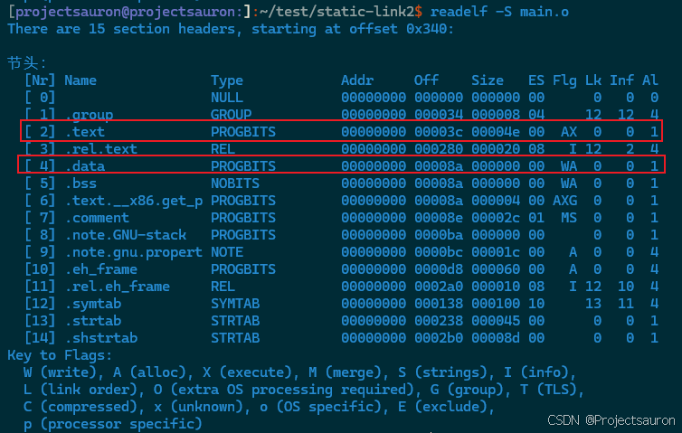
类似地，它们的 Addr 字段都是 0，因为这是目标文件，不是可执行文件，所以不会安排地址。然后看：
.text在main.o文件中的偏移量（off）是0x3c，大小（size）是 $0x4e$.data在main.o文件中的偏移量（off）是0x8a，大小（size）是 $0x00$，因为它没有定义变量
还有 header：
1 | readelf -h main.o |
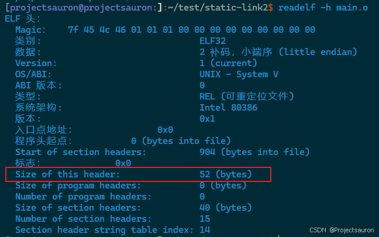
内存映像如下：
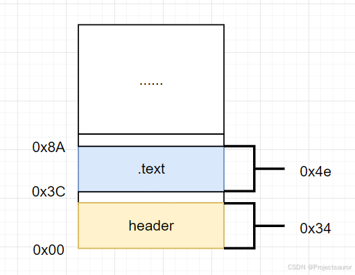
最后是符号表信息：
1 | readelf -s main.o |
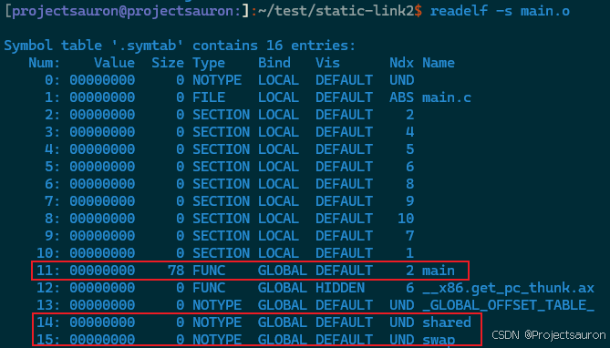
main：
Size = 78，大小为 78 字节Type = FUNC，表示这是一个函数Bind = GLOBAL，表示这是全局的，也就是在其他文件中可以使用Ndx = 2，说明这个符号是属于第 2 个段，就是代码段(.text)
不过在这里 shared 和 swap 的 Ndx 都变成了 UND，表示这两个符号被 main.o 引用，但是定义在其它文件中。
三、地址信息
当链接成可执行文件时，所有的符号都必须有确定的地址（虚拟地址），所以链接器就需要在链接的过程中找到这 2 个符号在可执行文件中的地址，然后把这两个地址填写到 main 的代码段中。
可以先来看一下 main.o 的反汇编代码：
1 | objdump -d main.o |
注意红色圈住的两句：
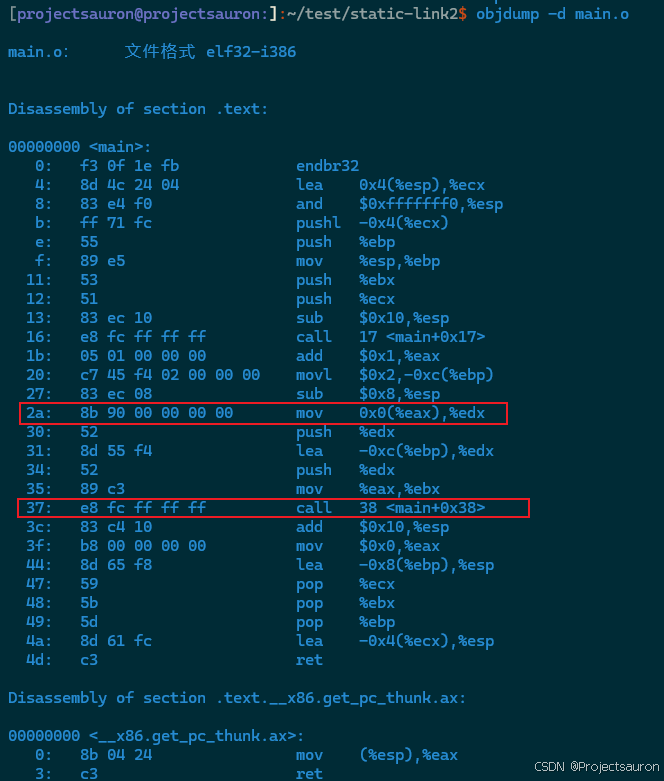
上面那个圈中的 00 00 00 00 就应该是符号 shared 的地址，只不过此时 main.o 还不知道这个符号的将会被链接器安排在什么地址，所以只能空着(以 4 个字节的 00 来占位)。
红色部分的调用（call）地址为什么是 fc ff ff ff?
按照小端格式计算一下：0xfffffffc，十进制的值就是 -4，为什么设置成 -4 呢？
对于 x86 平台的 ELF 格式来说，对地址进行修正的方式有两种：绝对寻址和相对寻址。
1、绝对寻址
对于 shared 符号就是绝对寻址，在链接成可执行文件时，这个地址在代码段中偏移 0x2c 个字节（上面的那个红色圈中指令码偏移 0x2a 个字节，跨过两个字节的指令码 8b 和 90 就是 0x2c 个字节)，这个地方 4 个字节的当前值是 00 00 00 00。
链接器在修正的时候(就是链接成可执行文件的时候)，会把这 4 个字节修改为 shared 变量在可执行文件中的实际地址(虚拟地址)。
2、相对寻址
而下面那个红色框中的函数调用（swap 符号)，就是相对寻址，就是说：当 CPU 执行到这条指令的时候，把 PC 寄存中的值加上这个==偏移地址==，就是被调用对象的实际地址。
链接器在重定位的时候，目的就是计算出相对地址，然后替换掉 fc ff ff ff 这四个字节。
PC 寄存器中的值是确定的，当 call 这条指令被 CPU 取到之后，PC 寄存器被自动增加，指向下一条指令的开始地址（偏移 0x61 地址处）。
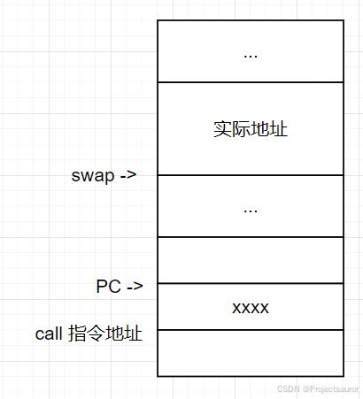
所以：实际地址=PC 值 + xxxx，故有：xxxx=实际地址-PC 值。
前面已经说了，xxxx 是相对偏移地址
而 PC 值与 xxxx 所在的地址之间是有关系的：PC值 + (-4) 就得到 xxxx 所在的地址，因此在 main.o 中预先在这个地址处填 fc ff ff ff（-4）。
下面就来看，上面说的两个地址是怎么修正的。
四、重定位表
下面看一下重定位表信息：
1 | objdump -r main.o |
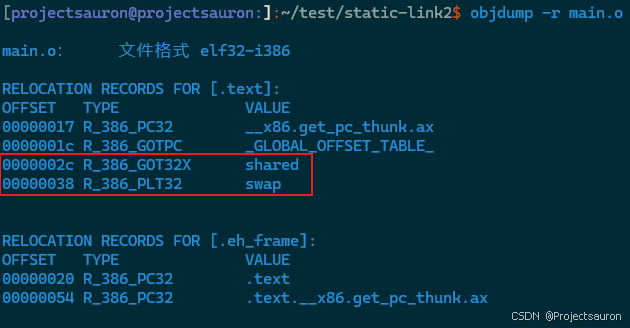
重定位表就表示：该目标文件中，有哪些符号需要在链接的时候进行地址重定位。
可以看到，shared 和 swap 就是需要重定位的：
TYPE 列：
- R_386_32 表示绝对寻址
- R_386_PC32 表示相对寻址
OFFSET 列表示需要重定位的符号在 main.o 文件代码段中的偏移位置，可以看出，和刚才反汇编 main.o 得到的汇编指令中的偏移是一样的。
五、可执行文件
有了 swap.o 和 main.o 这两个目标文件，就可以链接得到可执行程序了：
1 | $ ld -m elf_i386 main.o swap.o -e main -o main |
-e main：指定链接后程序的入口是 main 函数；-o main表示链接后的文件名。
如果你报了如下错：
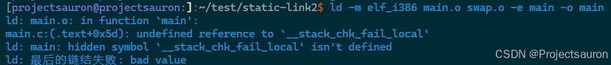
可以尝试如下方法解决：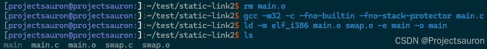
使用 readelf 工具来看一下 main 可执行文件中的段信息：
1 | $ readelf -S main |
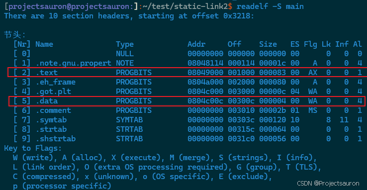
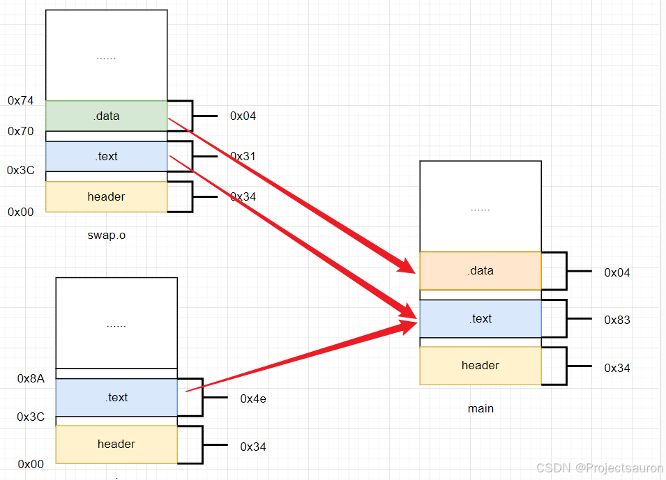
符号表信息：
1 | $ readelf -s main |
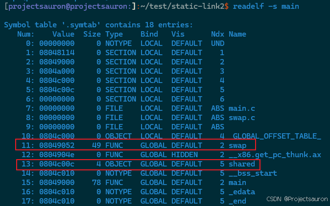
swap属于代码段，长度为 49 字节，虚拟地址是0x0804 9052（因为还有代码段中还有一部分是 main 函数）shared属于数据段，长度为 4 字节，虚拟地址是0x0804 c00c
可以看出，可执行文件 main 的代码段中，先存放的是 main 函数，虚拟地址为 0x0804 9000，长度为 78 字节。
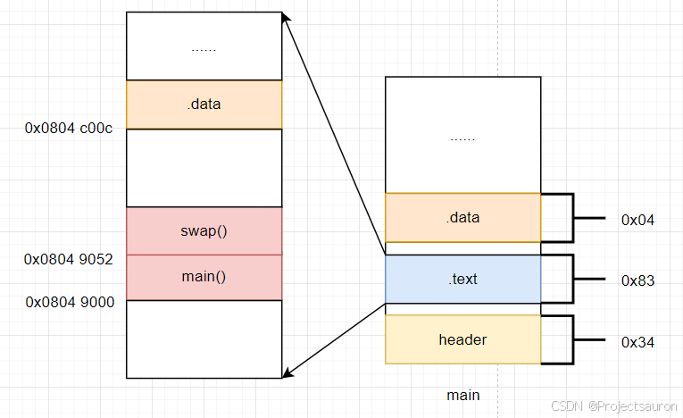
- 链接器在第一遍扫描所有的目标文件时，把所有相同类型的段进行合并，安排到相应的虚拟地址，如上图所示。
所谓的安排虚拟地址，就是指定这块内容被加载到虚拟内存的什么地方。当可执行文件被执行的时候，加载器就把每一块内容复制到虚拟内存相应的地址处。
同时，链接器还会建立一个==全局符号表==，把每一个目标文件中的符号信息都复制到这个全局符号表中。
对于我们的实例程序，全局符号表中包括：
shared：属于swap.o文件，数据段，安排在虚拟地址0x0804 c00c;swap：属于swap.o文件，代码段，安排在虚拟地址0x0804 9052;- 其它符号信息…
1、绝对地址重定位
然后，链接器第二遍扫描所有的目标文件，检查哪些目标文件中的符号需要进行重定位。
- 对于我们的示例程序，首先来看一下
main.o中使用的外部变量shared的重定位。
从 main.o 的重定位表中可知：shared 符号需要进行重定位，需要把这个符号在执行时刻的绝对寻址(虚拟地址)，写入到 main 可执行文件中代码段中偏移 0x2c 字节处。
也就是说需要解决 2 个问题：
- 需要计算出在执行文件 main 中的什么位置来填写绝对地址（虚拟地址）
- 填写的绝对地址（虚拟地址）的值是多少
首先来看第一个问题：
从可执行文件的段表中可以看出：目标文件 main.o 和 swap.o 中的代码段被存放到可执行文件 main 中代码段的开始位置，先放 main.o 代码段，再放 sub.o 代码段。
代码段的开始地址距离文件开始的偏移量是 0x1000，再加上偏移量 0x2c，结果就是 0x102c。
也就是说：需要在 main 文件中偏移 0x102c 处填入 shared 在执行时刻的绝对地址(虚拟地址)。
再来解决第二个问题。
链接器从全局符号表中发现：shared 符号属于 swap.o 文件，已经被安排在虚拟地址 0x0804 c00c 处，因此只需要把 0x0804 c00c 填写到可执行文件 main 中偏移 0x102c（十进制 4140）的地方。
我们来读取 main 文件，验证一下这个位置处的虚拟地址是否正确：
1 | od -Ax -t x1 -j 4140 -N 4 main |
-Ax: 显示地址的时候，用十六进制来表示。如果使用-Ad，意思就是用十进制来显示地址;-t -x1: 显示字节码内容的时候，使用十六进制(x)，每次显示一个字节(1);-j 166: 跨过 166 个字节(十六进制 0xa6);-N 4：只需要读取 4 个字节;
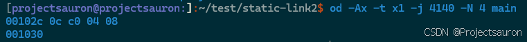
结果验证成功！
2、相对地址重定位
main.o 代码段中的 `` 符号也需要重定位，而且是相对寻址。
链接器需要把 swap 符号在执行时刻的绝对地址（虚拟地址），减去 call 指令的下一条指令(PC 寄存器) 之后的差值，填写到执行文件 main中的 main.o 代码段偏移 0x38 的地方。
同样的道理，需要解决 2 个问题：
- 需要计算出在执行文件 main 中的什么位置来填写相对地址
- 填写的相对地址的值是多少
首先来看第一个问题。
从 main.o 的重定位表中可知：需要修正的位置距离 main.o 中代码段的偏移量是 0x38 字节。
可执行文件 main 中代码段的开始地址距离文件开始的偏移量是 0x1000，再加上偏移量 0x38 就是 0x1038。
也就是说：需要在 main 文件中 0x1038 偏移处填入一个相对地址，这个相对地址的值就是 swap 在执行时刻的绝对地址（虚拟地址）、距离 call 指令的下一条指令的偏移量。
再来看第二个问题。
链接器在第一遍扫描的时候，已经把 swap.o 中的符号 swap 记录到全局符号表中了，知道 swap 函数被安排在虚拟地址 0x0804 9052 的地方。
但是不能把这个绝对地址直接填写进去，因为 call 指令需要的是相对地址(偏移地址)。
链接器把 main 代码段起始位置安排在 0x0804 9000，那么偏移 0x38 处的虚拟地址就是：0x0804 9038，然后还需要再跨过 4 个字节（因为执行 call 指令时，PC 的值自动增加到下一条指令的开始地址）才是此刻 PC 寄存器的值，即：0x0804 903C。
两个虚拟地址都知道了，计算一下差值就可以了：0x0804 8052 - 0x0804 903c = 0x16。
也就是说：在可执行文件 main 中偏移为 0x1038（十进制 4152）的地方，填入相对地址 0x0000 0013 就完成了 swap 符号的重定位。
还是用 od 指令来读取 main 文件的内容来验证一下：
1 | od -Ax -t x1 -j 4152 -N 4 main |
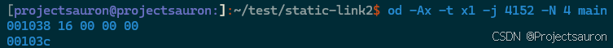
六、总结
这样，通过两个重定位操作，main.c 的两个外部符号就解决了地址重定位问题。
下面通过反汇编代码看一下我们的计算是否正确：
1 | objdump -d main |
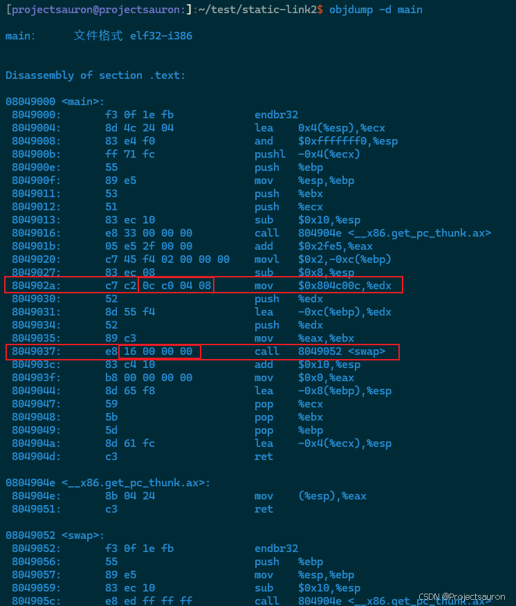
中间圈出的两个数据和前面计算的是一样的！
以上就是静态链接过程中地址重定位的基本过程，与动态链接相比，静态链接还是相对简单很多。